A Core Sample of Nikaho
地層に眠る、産業と人の記憶
一千万年前の海底から、2026年の夏へ。
女川層、由利十二頭、飛良泉、院内油田、そしてTDK。
旧仁賀保町の記憶を、
深度−1,000Mから掘り上がる。
Preface — 序
Why We Read This Land as Strata
にかほ市というひとつの土地には、
幾重もの時間が積み重なっている。
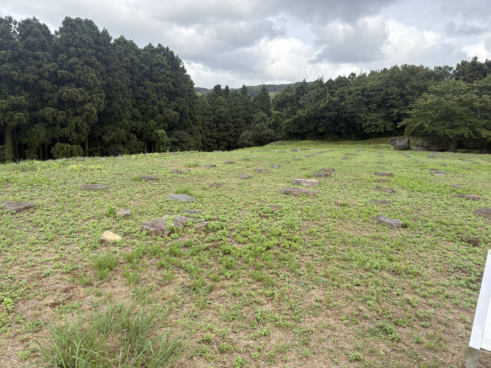
にかほ市というひとつの土地には、幾重もの時間が積み重なっている。約一千万年前、海底に堆積したプランクトンの死骸が「女川層」という岩石をかたちづくり、そこに石油が閉じ込められた地質学的な奇跡。平安末期から続いた由利氏、そして信濃から移り住んだ大井氏＝仁賀保氏による、三百年を超える領地統治。室町時代から続く酒蔵・飛良泉の五百四十年。明治の油田開発から、農業改革者・斎藤宇一郎、そしてTDK創業者・斎藤憲三へと引き継がれた、一次産業から近代産業への奇跡的なバトンタッチ。
これらはすべて、時間軸を異にする別々の出来事のように見えて、実は一本の「柱状図（コア・サンプル）」のなかに連続して存在している。本資料は、七つの音声記録・視察記録・議事録をひとつに統合し、それらを地質学的な深度になぞらえて再構成したものである。もっとも古い地層から、もっとも新しい地層へと、ページをめくるごとに時代を掘り上がっていく構成とした。
内容は一切の省略なく、すべての記録を統合している。フィールドワーク参加者たちの率直な声、現地での何気ない日常の一幕までも、この土地の「地層」の一部として記録した。
Contents / Stratigraphic Column — 柱状図
地層をクリックすると、その深度へ降りられます。スクロールすれば、最深部から地表へ——時代を掘り上がっていきます。
本資料に収録された七つの原記録（仁賀保の歴史と斎藤宇一郎の功績／飛良泉本舗見学記録／斎藤宇一郎・憲三父子の軌跡／視察・活動要約レポート／にかほ市探訪記録要約／仁賀保高原油田視察レポート／フィールドワーク最終日総括報告）の内容は、要約・省略することなくすべて本文中に統合されている。
Part I — Depth : −1,000M
The Memory of the Earth
すべての物語は、人間の歴史が始まるはるか以前、海の底から始まる。にかほ市の地下に眠る「女川層」——一千万年の歳月をかけて堆積した地層が、この土地のすべての産業史の、文字通りの土台となった。
The Onnagawa Formation
にかほ市になぜ石油が存在するのか。その答えは、地質学的に「女川層（おんながわそう）」と呼ばれる地層の形成過程にある。この土地に眠る資源は、地上に築かれたどの歴史よりも古く、そして長い時間をかけて用意されたものだった。
形成の三段階/ THREE STAGES
この地層が断層の隙間（シール層）にトラップされることによって、地表近くに油層が形成された。標高約500mに広がる「仁賀保高原」は、こうして日本有数の油田地帯となる地質学的条件を、太古の昔から備えていたのである。
十万年単位の時間が、ひとつの土地の産業の運命を静かに決定づけていた。
にかほ市域にはこのほか、約220年前に発生した象潟地震による土地の隆起や、川が乱流してできる「流山」地形の成り立ちなど、大地そのものが動いてきた記憶が随所に残る。神社に伝わる伝統的な奉納相撲の歴史や、由利地方に伝わる妖怪伝説「うやむやの関」も、こうした土地の記憶と分かちがたく結びついている。
Part II — Depth : −700M
The Warrior Stratum
平安末期から明治維新まで、およそ700年。由利氏の興亡、そして信濃から移り住んだ大井氏——後の仁賀保氏——による堅実な統治。この地は「由利十二頭」と呼ばれた武士団たちの、激動の舞台であり続けた。
The Rise and Fall of the Yuri Clan
平安時代末期より当地を支配したのが由利氏である。源頼朝の討伐軍に捕縛された際、その立派な態度から一度は赦免されたと伝わる。しかし、後の誤解から生じた一揆によって、由利氏はついに滅亡した。現在も禅林寺の周辺には「由利太郎の墓」が残されている。
A Strange Joint in History
この地と日本の近代化とを結ぶ、数奇な歴史の接点。
由利氏の物語は、しかし幕末に思わぬかたちで再び歴史の表舞台に現れる。五箇条の御誓文を起草した福井藩士・三岡八郎は、由利氏の末裔であるという縁から、藩主・松平春嶽の命により「由利公正」と改姓した。ひとつの滅びた武士団の名が、明治国家の礎となる文書の起草者の名として蘇ったのである。
由利十二頭とは、赤尾津・矢島・滝沢など、由利氏滅亡後に一帯へ割拠した戦国期の在地武士団の総称である。この土地の武家史は、次章で語る仁賀保氏の台頭と、彼らとの三十年にわたる抗争へと続いてゆく。
The Rise of the Nikaho Clan
由利氏の滅亡後、信濃国から移住してきた大井氏——後の仁賀保氏——が、康平年間（1067年頃）にこの地へ土着した。彼らは関ヶ原の戦いに至るまで、実に7代・約336年にわたり、この地を堅実かつ強力に統治し続けた。
仁賀保氏の統治世代数
関ヶ原まで統治した期間
矢島氏との抗争期間
戦国期、この一帯には「由利十二頭」と称された諸勢力——赤尾津、矢島、滝沢など——が割拠していた。なかでも仁賀保氏と矢島氏は、30年にも及ぶ激しい抗争を繰り広げたことで知られる。関ヶ原の戦いの後、仁賀保氏は一時常陸国へ移封されるが、後に一万石をもって旧領への復帰を果たした。
由利十二頭のうち、明治時代まで大名（旗本）として存続し得たのは仁賀保氏ただ一家であった。その末裔は現在も神奈川県に在住しているという。案内者自身のルーツである根井氏（真田氏配下）の逸話をはじめ、周辺勢力による連合軍の戦いなど、戦国・江戸・明治と紡がれた武将たちの足跡は、現在の町並みのなかに確かに息づいている。
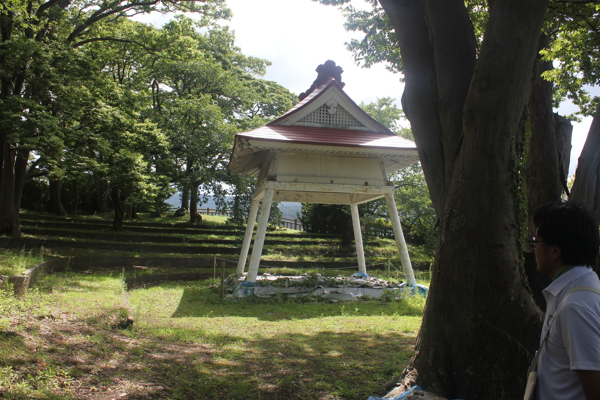
仁賀保神社や急峻な城跡の階段、大門跡などには、かつての要害としての堅固な姿が、高低差や地形のなかに今も色濃く残されている。
The Nikaho Jin'ya & the Division of the Domain
仁賀保家の所領は、後に7000石・2000石・1000石の三家に分割された。長男の急死にともない、7000石は象潟方面（本荘・矢島との分割統治）へと移り、仁賀保家自体は2000石と1000石の所領を治めることとなった。
1626年から1868年までの約240年間、仁賀保には米蔵や役所を備えた「仁賀保陣屋」が置かれ、この地の統治拠点として機能し続けた。
仁賀保陣屋が置かれた期間
7000／2000／1000石への分割
明治時代の廃藩置県などにより、仁賀保家による領地統治は終わりを迎えた。しかし、仁賀保家そのものは存続し、現在も神奈川県などにその末裔が健在である。その血脈と歴史は、姿を変えながらも現代へと確かに受け継がれている。
後に語る斎藤家（仁賀保五家老の家系）のルーツは、源頼朝の側近・大江広元にまで遡るとされる。江戸時代には旗本・仁賀保（二賀保）氏としてこの地を治め、長男・次男・三男による分割相続などを経て存続してきた、重厚な系譜である。この系譜こそが、次章以降で語る近代産業史の背骨となっていく。
Part III — Depth : −400M
The Seeds of Industry
室町時代から五百年以上続く酒蔵・飛良泉本舗。そして明治に発見され、昭和10年代に日本一の産油量を誇った、仁賀保高原油田。二つの異なる「産業」が、この土地の地下水と地層から生まれ育っていった。
Hiraizumi Honpo, Since 1487
秋田県にかほ市の酒蔵「飛良泉（ひらいずみ）本舗」は、1487年——室町時代、京都に銀閣寺が建立された頃——に創業した。日本で3番目に古い歴史を持つとされる蔵である。今回のフィールドワークでは、第27代目蔵元・斎藤雅昭氏の案内により、見学ツアーが行われた。
ツアーの冒頭では、地元出身の漫画家・藤本タツキ氏の少年時代の思い出も和やかに語られた。無口で大人しく、よくコミックを買い集めていたという少年時代のエピソードである。
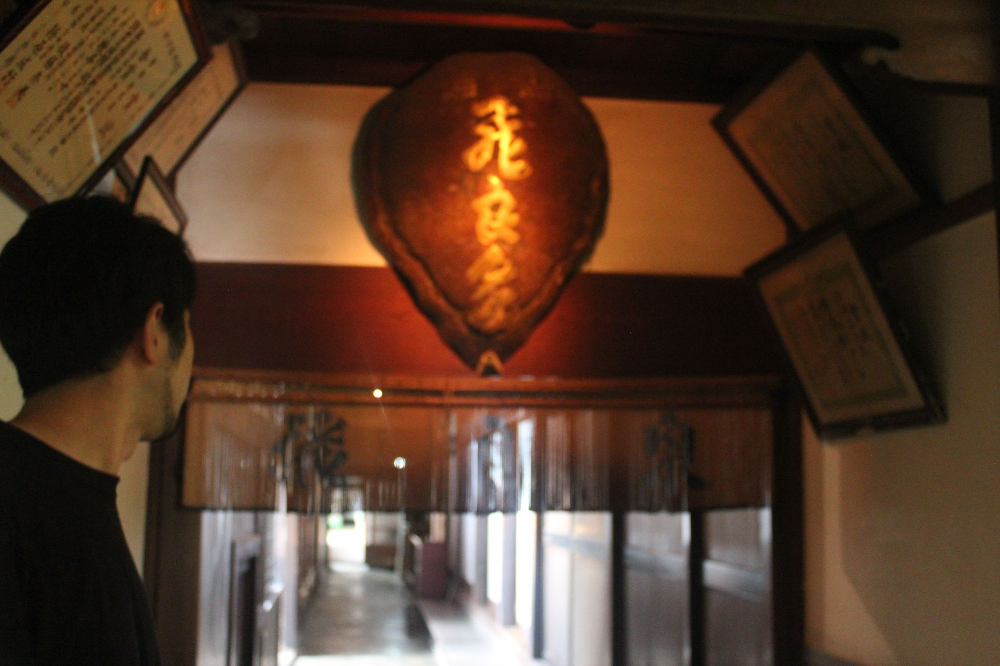
飛良泉は元々、大阪・泉州をルーツとする蔵であった。応仁の乱を逃れて日本海側を北上し、やがて秋田の地に定住したと伝わる。かつては北前船や松前船を用いて北海道や関西・北陸と交易を行う「廻船問屋」であり、酒造りはその交易業と並行して営まれていた。明治以降、鉄道網の発達によって海運が衰退したことを機に、酒造り専業へとシフトしていった。
蔵や母屋は戊辰戦争で焼失した後、明治元年に再建。内部には上段が神棚・下段が仏壇という珍しい「神仏習合」の祭壇が今も祀られている。
約300年前のウミガメの剥製や、大名行列の毛槍などが蔵内に残る。約220年前の象潟地震による土地の隆起も語り継がれている。
Craft & Water
飛良泉の仕込み水には、鳥海山の伏流水が使われる。日本の水としては硬度が高めの「中硬水」であり、これが発酵を促し、「酸が効いたキレのある酒」を生み出す源泉となっている。使用する米の約96%は秋田県産である。
秋田県産米の使用比率
火入れの加熱温度
鳥海山の伏流水
厳密な工程管理と伝統技法
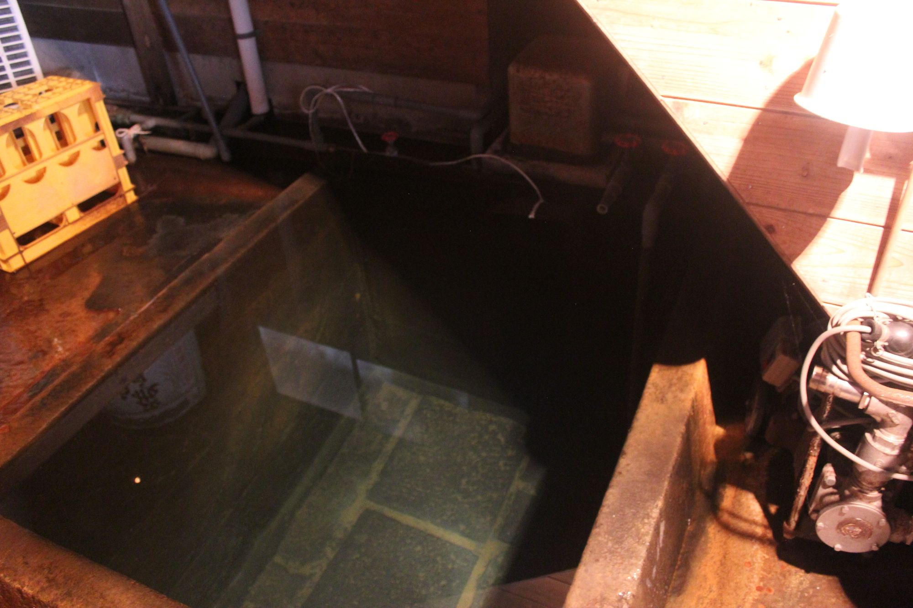
Tradition in Motion
飛良泉本舗は、伝統を守るだけでなく、現代の環境やニーズに合わせて柔軟な進化を遂げている。かつて主流だった「香りが強く甘い酒」から脱却し、現代の食生活や食事に寄り添う「香りが穏やかで、酸味を活かしたお酒」の開発に注力している。
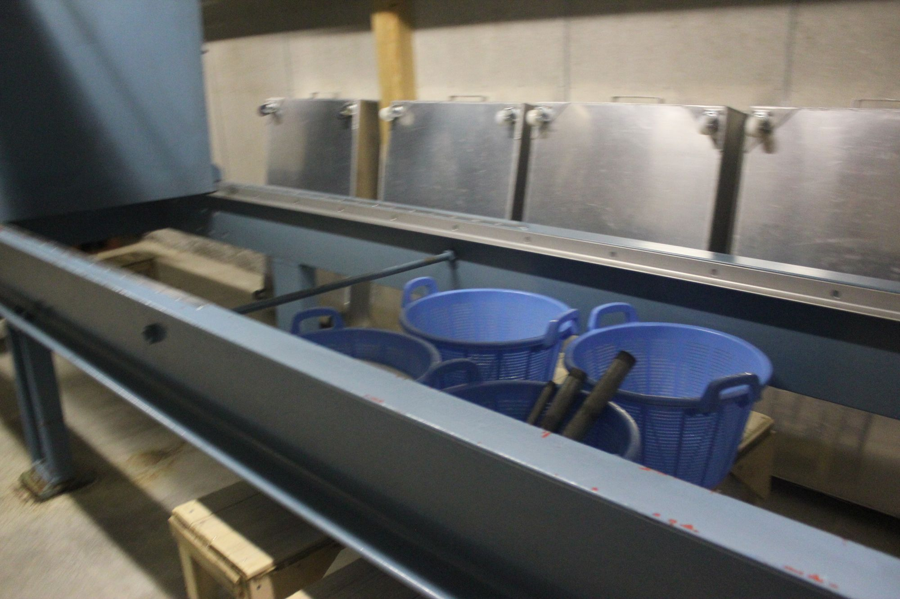
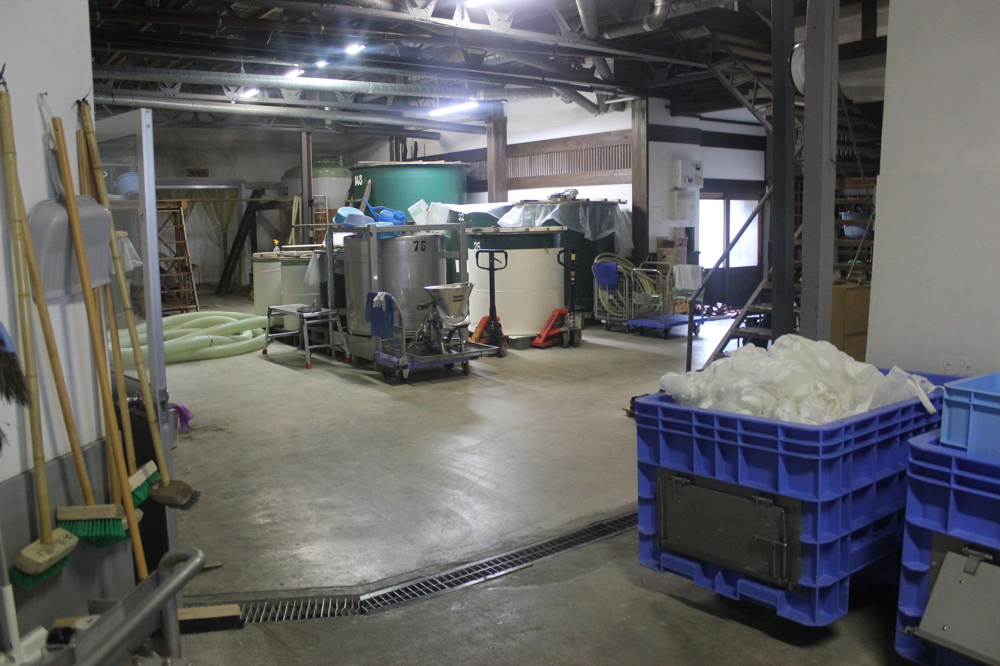
かつては冬場のみ杜氏（職人）を呼び寄せて造っていたが、現在は社員を中心とした製造体制へ移行し、技術の蓄積を図っている。
品質を落とさずにコストを抑えるため、放冷機や搾り機など、無駄を省いた最新の機械設備を導入し、持続可能な酒造りを実践している。
五百四十年の歴史は、変わらぬ水と、変わり続ける手のなかにある。
The Nikaho Highland Oil Field
にかほ駅の南東、標高約500mに広がる「仁賀保高原」は、かつて日本有数の油田地帯であった。明治7年（1874年）に採掘が開始された。当初、自然に湧出する原油は地元住民から「神の祟り」として恐れられ、触れることすら忌避されていたという。しかし、イギリスなどでのランプの普及や機械掘り技術の導入により、本格的な採掘が始まった。
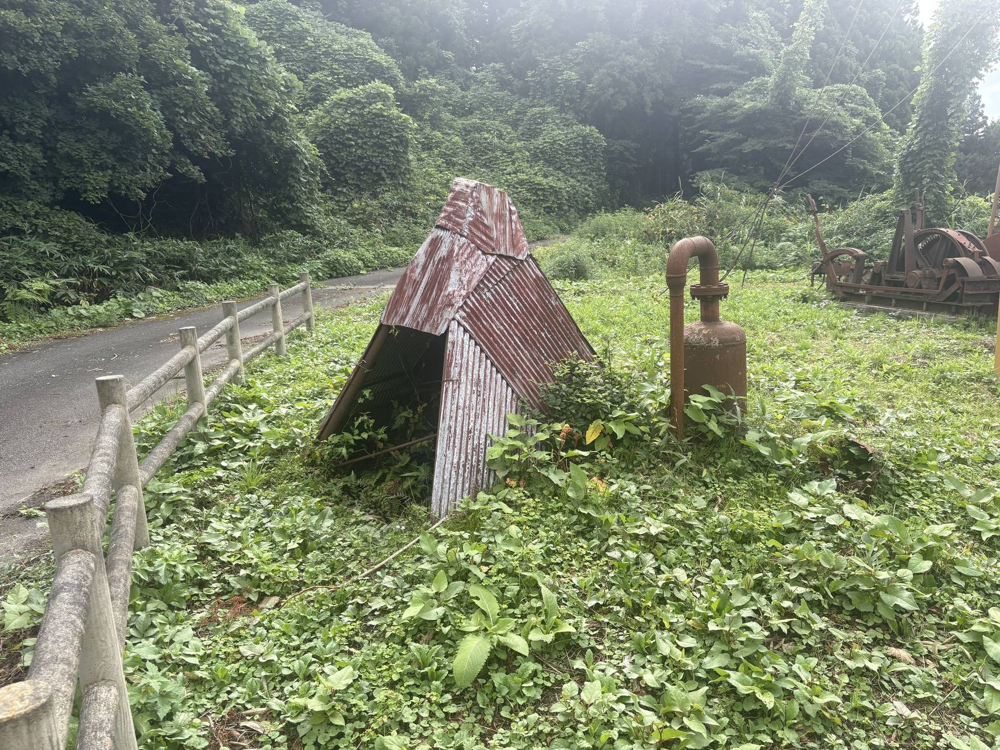
採掘開始（明治7年）
最盛期の年間産出量
当時の日本全体に占める割合
戦時中の昭和10年代に最盛期を迎え、年間約11万3,000キロリットル——当時の日本全体の約3分の1——を産出し、日本一の油田となった。この影響で人口は5年間で約1,600人増加し、山中には映画館やパチンコ店が立ち並ぶ一大集落が形成されたという。
油田は全長約4km、幅300mというエリアに集中しており、中野石砿、日本石油、大日本石油鉱業など4社が熾烈な開発競争を繰り広げた。その結果、総計394本もの井戸が乱掘され、油田の寿命を著しく縮める結果を招いた。戦後は各社が撤退・合併を繰り返し、平成7年（1995年）には採算悪化により事実上の閉山を迎えた。現在も一部で原油が湧出しており、年間数十キロリットルが細々と汲み上げられている。
The Pumping Power System
院内油田の特徴的な採掘技術に「ポンピングパワー方式」がある。これは、1つのモーター（動力源）から多数のワイヤーをクモの巣のように張り巡らせる仕組みである。偏心ギアを用いて回転運動を上下運動に変換し、最大20台のポンプを同時に稼働させた。山中の至る所にワイヤーが張り巡らされ、24時間体制で稼働していたという。
Interactive Diagram1つのモーターが、20台のポンプを動かす
※ 仕組みを伝えるための模式図です（ポンプの配置は実際の地形とは異なります）。
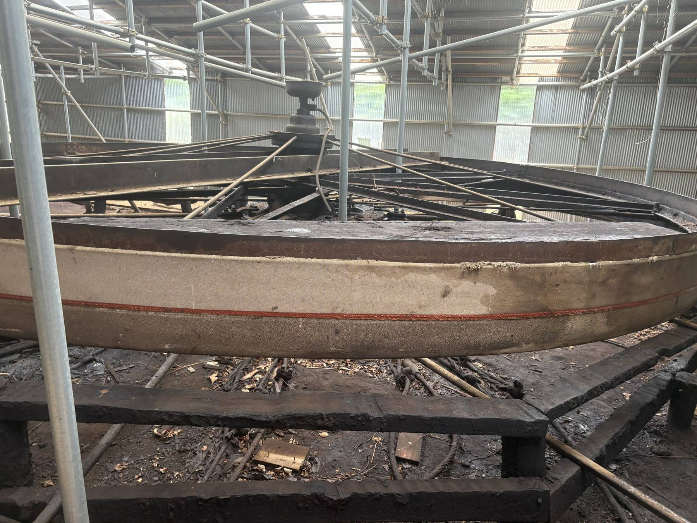
同時稼働したポンプ
乱掘された井戸の総数
稼働体制
採掘された原油は加熱され、沸点の違いを利用して分留された。低い温度から順に、LPガス、ナフサ（ガソリン原料）、灯油、軽油、重油、アスファルトが抽出される。
油田開発以前、この地には康平年間（1067年頃）に信濃国から移住してきた大井氏が土着していた。彼らは後に「由利衆（由利十二頭）」と呼ばれる強大な武士団を形成し、この地一帯を支配した——第Ⅱ部で語った、あの系譜である。仁賀保高原は、地下に眠る資源だけでなく、地上に積み重なった豊かな歴史と文化をも、同時に育んできた土地であった。
Part IV — Depth : −120M
The Miracle of Modernization
父・斎藤宇一郎による農業改革。そしてその子・憲三による「農村の工業化」という悲願から生まれたTDK。油田産業の終焉と新興の電子産業とが見事にクロスした、産業史における奇跡的な変遷がここにある。
Saito Uichiro — The Agrarian Reformer
仁賀保陣屋の代官（家老）を務めた斎藤茂助の息子が、後にTDK創設者・斎藤憲三の父となる斎藤宇一郎である。東京の大学に進学していた宇一郎は、父の死を機に帰郷し、地域が抱える深刻な農業問題に直面することとなった。
当時主流であった泥深い「湿田」を干し上げ、馬を使って深く耕す新農法——「乾田馬耕（かんでんばこう）」を宇一郎は提唱した。当初は農民から強い反発を受けたものの、耕地整理とともに推進した結果、米の収穫量の大幅な増加と、労働負担の軽減（生産性向上）を実現するに至った。
産業に乏しかった仁賀保において、宇一郎は農業・漁業・林業の振興に生涯を捧げた。鳥海山麓の干拓や耕地整理を推進し、佐賀から農業指導者・原坦存らを招き、寒冷地に適した米作りと馬耕を導入。共同倉庫の設立によって近代農業の基盤を構築した。また、衆議院議員を23年間務め、鉄道敷設など地域インフラの整備にも貢献している。
衆議院議員としての在任期間
小作人保護法や、現在の農協のルーツとなる産業組合の設立にも尽力した。これらの取り組みにより、秋田米の品質は飛躍的に向上し、大阪市場への販路拡大が実現した。農政の偉人として銅像が建立されたほか、仁賀保神社の隣には斎藤神社として合祀され、現在も人々に敬われている。
Kenzo Saito & the Founding of TDK
農家の次男・三男の雇用対策として、宇一郎の子・憲三は「農村の工業化」を悲願として掲げた。実業家・津田氏からの出資を受け、幾多の失敗を恐れず事業に邁進した憲三は、後年「2勝98敗の男」と称されるほどの不屈の精神を持っていたと伝わる。農村救済を目指し、まずはアンゴラウサギ事業などに挑戦している。
失敗の数だけ、次の一歩がある。
0 Losses / 0 Wins
その後、加藤・武井両博士が発明した日本発のオリジナル磁性材料「フェライト」の可能性に着目し、昭和10年、東京電気化学工業（現TDK）を創業した。戦災による工場の焼失など未曾有の苦難に見舞われながらも再建を果たし、同社を世界的な電子部品メーカーへと育て上げた。
農業と工業の融和を説いた憲三の理念——「農工一体」——は、後述するように、田んぼの雑草を抑制する「アイガモロボ」などの最新技術開発にも、現在まで脈々と受け継がれている。一次産業（油田）から近代産業（TDK）への変遷は、油田の産出量が減少に向かう絶妙なタイミングで起こった。地域の雇用と経済が途切れることなく引き継がれた、産業史における奇跡的な変遷であった。
The Memorial Hall & Its Lineage
TDK創業者・斎藤憲三の生家跡には記念館が建つ。昭和54年、単独の記念館として改築された本館の開館時には、犬養毅らと共に第一回普選運動を戦い、大逆事件や極東国際軍事裁判の弁護を務めた元衆議院議長・清瀬一郎氏が揮毫を寄せている。
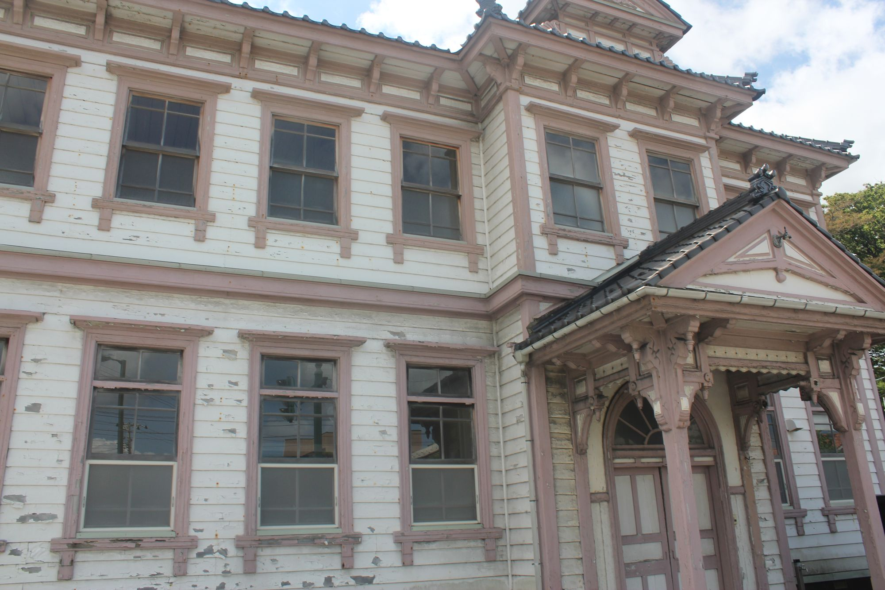
斎藤家のルーツは、源頼朝の側近・大江広元にまで遡るとされる。その後、江戸時代には旗本・仁賀保（二賀保）氏としてこの地を治め、長男・次男・三男の分割相続などを経て、存続してきた重厚な歴史を持つ——第Ⅱ部で語った仁賀保家の系譜と、この記念館の物語は、ひとつの糸で結ばれている。
館内には、鳥海山の噴火によって埋もれた1200年前の巨大な杉の埋もれ木をはじめ、豊臣秀吉の小田原攻め参陣を促す書状、徳川家康の関ヶ原後の所領安堵状（レプリカ）、歴代将軍の朱印状など、一族の存続をかけたドラマを物語る第一級の歴史資料が多数展示されている。
Part V — Depth : 0M / Surface
The Present Surface
すべての地層を掘り上がった先に、現在がある。TDK歴史みらい館での未来体験、そして2026年8月、3日間にわたるフィールドワークそのものの記録——参加者たちの気づき、対話、そしてこれからのアクションプラン。
TDK History & Future Museum
フェライトはラジオなど当時の生活に不可欠な部品として普及し、IEEEマイルストーンにも認定されている。積層チップインダクタなど技術の進化は、スマートフォンの劇的な小型化を実現した。現在TDKは、①ICT、②エネルギー・製造・医療、③自動車分野の3つを注力分野としている。
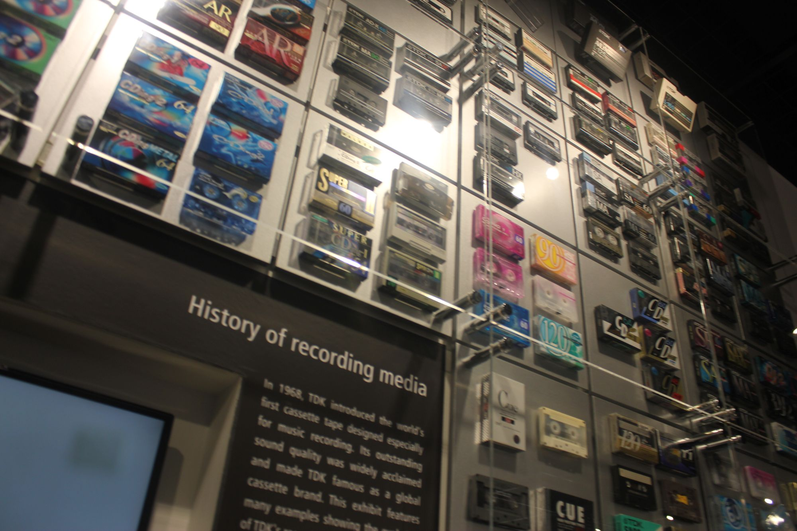
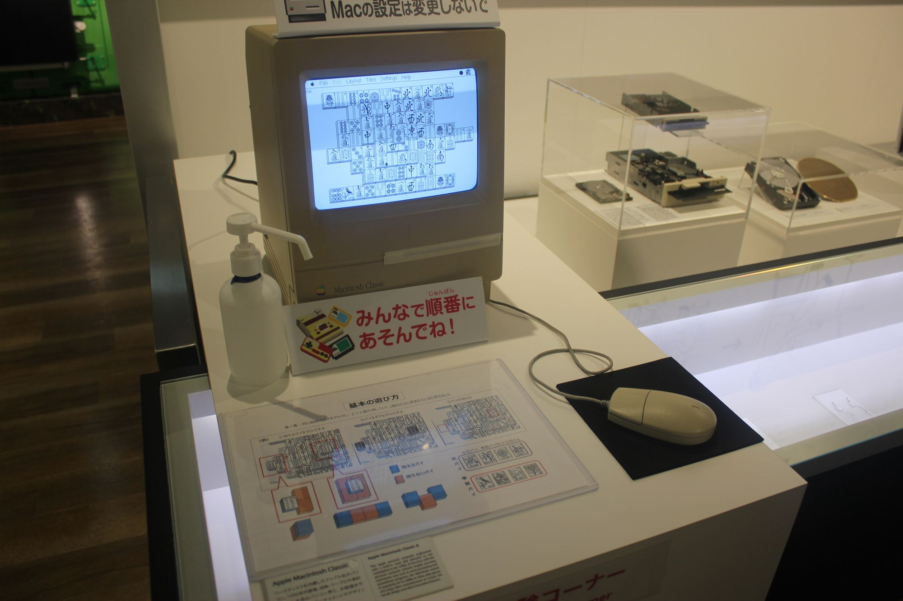
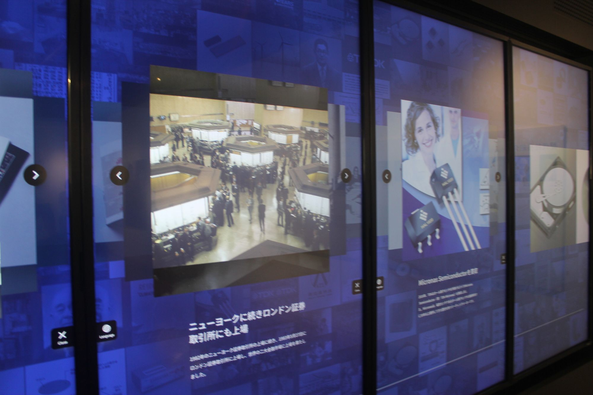
未来ゾーンでの体験
農業と工業の融和を説いた斎藤憲三の理念は、田んぼの雑草を抑制する「アイガモロボ」などの最新技術開発にも脈々と受け継がれている。100年前の農業改革の精神は、今もこの土地の技術のなかに生き続けている。
Field Notes — The Final Day
3日間にわたるフィールドワークは天候にも恵まれ、無事に終了した。参加者全員が怪我なく、充実した時間を過ごすことができた。にかほ市の「歴史・自然・産業・人」の繋がりを深く体感し、今後の具体的なアウトプットへの意欲が高まる視察となった。
午前 ｜ 仁賀保神社・仁賀保家見学
平泉氏の案内により、通常入れない仁賀保神社の奥まで見学。「仁賀保家」という存在を知り、地域に深く根ざした歴史の重みとルーツを実感した。
午後 ｜ TDKミュージアム・院内油田
地域発の技術力と、現在に至る産業発展の軌跡を学習。院内油田では山根館跡地などの史跡を見学し、地元民にもあまり知られていない油田の存在に驚愕。一次産業から近代産業への変遷と、歴史の連続性を実感した。
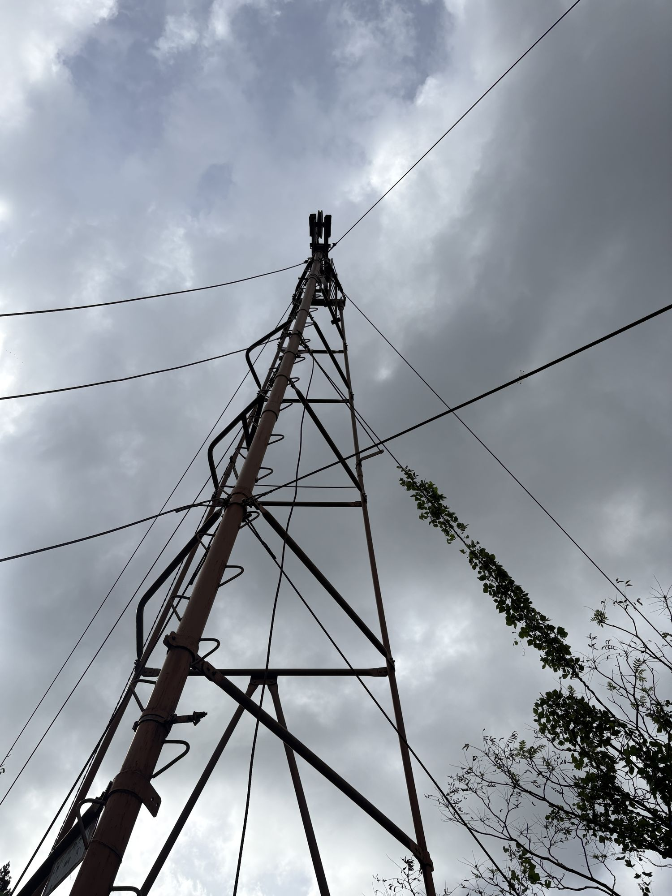
フィールドワーク期間中には、テーブルゲームなどを通じた周囲との白熱した対決や、「筋肉がついても代謝が落ちない」「なかなか痩せない」といった身体づくりに関する雑談も交わされた。警察への計画書・健康診断書の提出など、日々のフィールドワークを支える地道な事務作業も、この3日間の記録の一部である。地元商店街を巡り、大井氏など由利地方の歴史や、妖怪伝説「うやむやの関」といった土着文化に触れる時間もあった。
External Advisor's Review
総評として、3日間天候に恵まれ、全員が充実感を持てたことが何よりの成果であったと語る。院内油田など、地元住民でも気づいていない「にかほ市の魅力やポテンシャル」が多数存在しており、客観的な視点（外部の視点）を持たないと、地域の価値にはなかなか気づけないという課題感を示した。
アートや文化的な視点を「きっかけ」として、地元住民や子供たちに、自分たちの街の凄さ・魅力に気づいてもらう作品やプロジェクトを展開したいと述べる。フィンランドの事例（10歳児が森に幸せを感じる）を引き合いに出し、にかほ市の10歳児が「にかほらしさ」を感じる場所や風景を描けるような働きかけが重要であると指摘した。
にかほ市の10歳児が「にかほらしさ」を描けること。それがこの土地の次の地層になる。
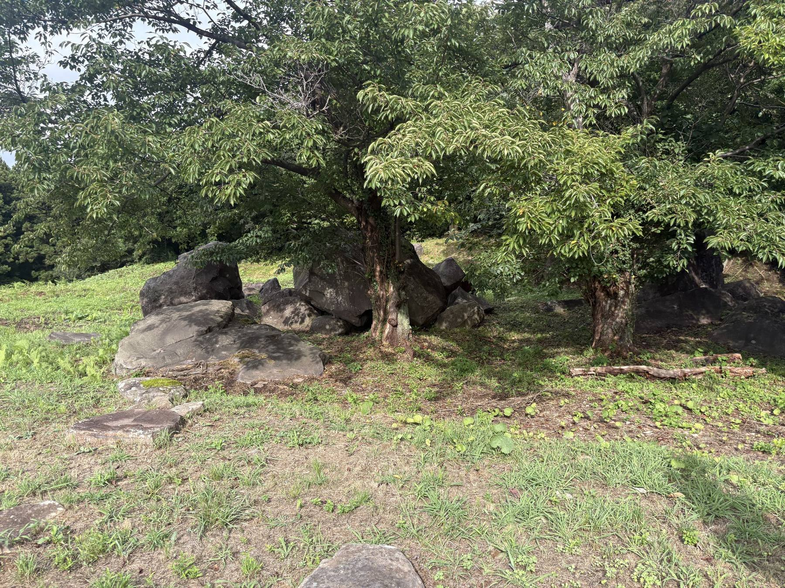
Voices from the Field
鳥海山の存在の大きさと、歴史や産業がすべて繋がっていることを実感。歴史的背景が現在の産業に直結していることを強く感じた。
当初の企画から若干のズレはあったが、結果的に深い歴史や産業に触れられ非常に有意義だった。この経験を今後の活動に活かしたい。
院内油田の存在に驚愕。油田からTDKへ至る産業の変遷を感じた。この3日間のインプットをアウトプットとして形にしていきたい。
住民が地元に誇りを持っていることを肌で感じた。にかほ市は魅力的な街であり、この経験を活かし市に貢献できることを探したい。
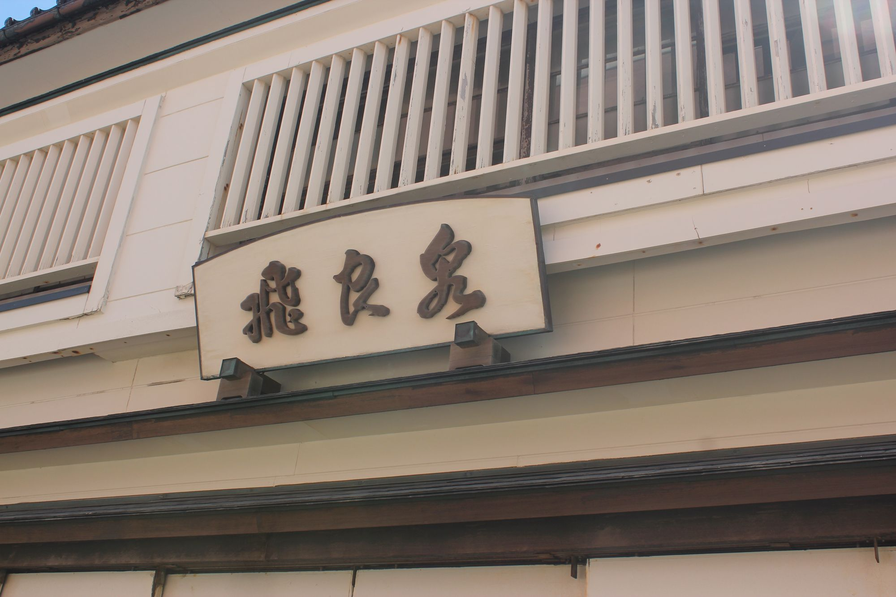
※本ページの発言は、2026年8月28日に行われた総括ミーティングの記録に基づく。
Next Steps
3日間のフィールドワークで得たインプットを、具体的なアウトプットへとつなげていくための行程が、以下のとおり定められている。
今回の学びを活かし、地元住民との対話を通じて地域の魅力を深掘りする。
個別対応での進行を予定。必要に応じてオンラインでの事前打ち合わせも検討する。
参加者間の連絡・情報共有用LINEグループを作成。「にかほらしさ」を伝える具体的なアートアクションや、地域課題解決案の検討を進める。
地層は、まだ堆積し続けている。
この記録もまた、いつか誰かが掘り起こす、
ひとつの層になる。
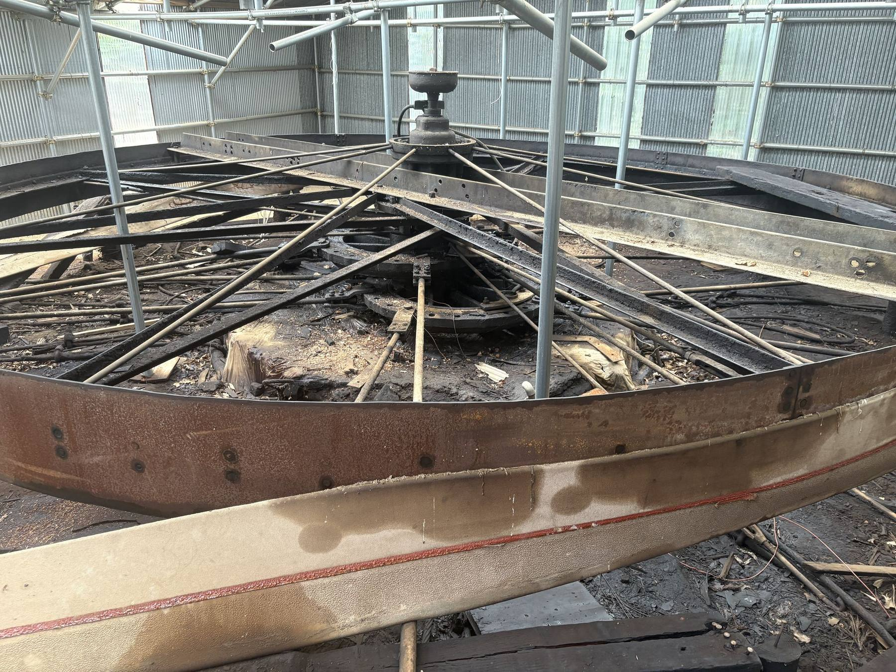
— 仁賀保層序 / Day 3 —
A Core Sample
of Nikaho
地層に眠る、産業と人の記憶
仁賀保の歴史と斎藤宇一郎の功績 音声記録詳細要約レポート／飛良泉本舗見学記録／斎藤宇一郎・憲三父子の軌跡／視察・活動要約レポート／にかほ市の歴史と産業 探訪記録要約／仁賀保高原油田視察レポート／にかほ市フィールドワーク最終日総括報告
FIN. — −1,000M → 0MAtelier SH01 — Shoichi Tsuda